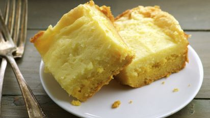

Ooeygooeybuttercake

The Best Damn Butter Cake In Town!
Just like Mamma used to Make.
- Wheat flour
- Butter
- Sugar
- Egg
- Powdered sugar
- Cream cheese
Steps
- Heat oven to 350 degrees. (I set my convection oven to 325°F)
- In a bowl, combine cake mix, 2 eggs, 1 tsp vanilla and the melted butter. Mash together with a fork until all ingredients are fully incorporated.
- Spray a 9-inch by 3-inch round cake pan or a 9-inch by 13-inch pan with baking spray or use a piece of parchment in the bottom of the pan.
- Press cake mixture into bottom of prepared pan and get it as flat as possible.
- Place cream cheese, remaining eggs, vanilla and melted butter in a stand mixer and beat on medium speed until creamy.
- Add in confectioners sugar 1 cup at a time (and on low speed) until all sugar has been added.
- Pour cream cheese mixture over cake mixture.
- Bake for 35-45 minutes. I moved mine from the oven when the edges were brown, but the center was still a bit jiggly. You do not want to over cook.
- Allow to cool before serving.